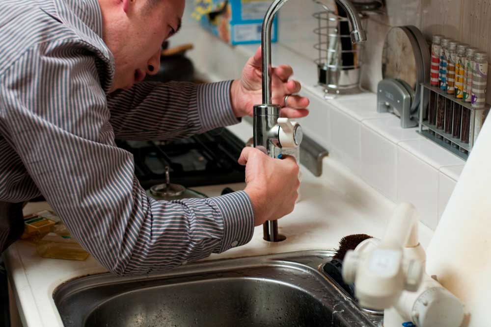

CAMILO GISBERT
IES RASCANYA ANTONIO CAÑUELO
Vols saber més?
Posa't en contacte amb el coordinador Camilo Gisbert, tècnic de skills Llanterneria i calefacción
lgonzalez@fpmislata.com
CAMILO GISBERT
IES RASCANYA ANTONIO CAÑUELO
Vols saber més?
Posa't en contacte amb el coordinador Camilo Gisbert, tècnic de skills Llanterneria i calefacción
lgonzalez@fpmislata.comÉs una especialitat que suposa la instal·lació dels diferents components que conformen el sistema de canonades d'aigua, calefacció, desguàs, sanitaris en domicilis particulars, edificis i locals industrials. Inclou instal·lacions de canonades de gas natural, manufacturat, *GLPs i aire comprimit.
És important, en aquesta especialitat, l'ús de noves tecnologies, relacionada amb els processos de soldadura, manipulació mecànica, calefacció, energies renovables i per descomptat el subministrament d'aigua potable, com una de les pedres angulars en la construcció i la reforma de les llars.
Sempre d'acord amb els reglaments i normes establides, seguint els protocols de qualitat, de seguretat i de prevenció de riscos laborals i respecte a les normes mediambientals.
Cicles formatius relacionats
Aplicacions
La seua aplicació s'estén tant a l'àmbit públic com al privat
i a tots els sectors productius.
Les aplicacions d'aquest sector són molt variades i múltiples, inclouen la instal·lació i fixació dels diversos elements sanitaris, la instal·lació de components i accessoris terminals en sanitaris i calefacció, per exemple dutxes, lavabos, vàters, calderes, radiadors i bombes de circulació, així com el seu manteniment, detecció de fallades i reparació..
CAMILO GISBERT
IES RASCANYA ANTONIO CAÑUELO
Vols saber més?
Posa't en contacte amb el coordinador Camilo Gisbert, tècnic de skills Llanterneria i calefacción
lgonzalez@fpmislata.com